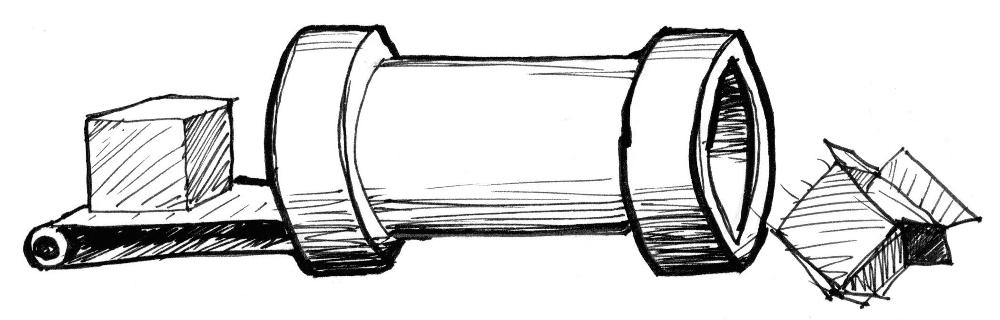
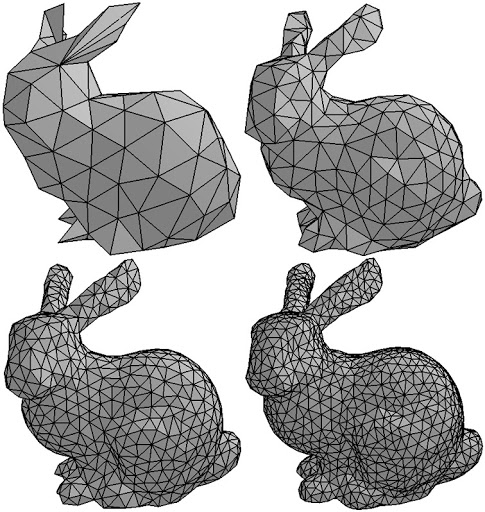
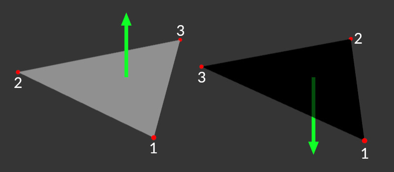

WEBGL Shaders
by Nikolay Kananov
Introduction
Gutenberg's press

Math we need to know
- linear algebra
- trigonometry
Shader Slang
- lerp
- functions
- sinusoid
- cartesian coordinates
- polar coordinates
- perlin noise
- voronoi
- etc...
What is a fragment shader?
Why are shaders fast?
every 3d model is a MESH
MESH normals

const normalBuffer = gl.createBuffer();
gl.bindBuffer(gl.ARRAY_BUFFER, normalBuffer);
const vertexNormals = [
// Front
0.0, 0.0, 1.0,
0.0, 0.0, 1.0,
0.0, 0.0, 1.0,
0.0, 0.0, 1.0,
// Back
0.0, 0.0, -1.0,
0.0, 0.0, -1.0,
0.0, 0.0, -1.0,
0.0, 0.0, -1.0,
// Top
0.0, 1.0, 0.0,
0.0, 1.0, 0.0,
0.0, 1.0, 0.0,
0.0, 1.0, 0.0,
// Bottom
0.0, -1.0, 0.0,
0.0, -1.0, 0.0,
0.0, -1.0, 0.0,
0.0, -1.0, 0.0,
// Right
1.0, 0.0, 0.0,
1.0, 0.0, 0.0,
1.0, 0.0, 0.0,
1.0, 0.0, 0.0,
// Left
-1.0, 0.0, 0.0,
-1.0, 0.0, 0.0,
-1.0, 0.0, 0.0,
-1.0, 0.0, 0.0
];
gl.bufferData(gl.ARRAY_BUFFER, new Float32Array(vertexNormals),
gl.STATIC_DRAW);
...
return {
position: positionBuffer,
normal: normalBuffer,
textureCoord: textureCoordBuffer,
indices: indexBuffer,
};
const fsSource = `
varying highp vec2 vTextureCoord;
varying highp vec3 vLighting;
uniform sampler2D uSampler;
void main(void) {
highp vec4 texelColor = texture2D(uSampler, vTextureCoord);
gl_FragColor = vec4(texelColor.rgb * vLighting, texelColor.a);
}
`;

800 x 600
800 x 600 = 480 000px
30 times per secund